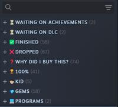

0
0
0

An anonymous reader quotes a report from the Wall Street Journal: Mark Zuckerberg wants everyone inside and outside his company to eventually have his or her own personal artificial-intelligence agent. He is starting with himself. Zuckerberg, the chief executive of Meta Platforms, is building a CEO agent to help him do his job (source paywalled; alternative source), according to a person familiar with the project. The agent, which is still in development, is currently helping Zuckerberg get information faster -- for instance, by retrieving answers for him that he would typically have to go through layers of people to get, the person familiar with the project said.
[...] Use of AI tools has spread quickly through the ranks at Meta -- in part because it is now a factor in employees' performance reviews. Meta's internal message board is filled with posts from employees sharing new AI use cases they have found and new tools they have built using AI, according to people familiar with the matter. [...] Employees have started using personal agent tools such as My Claw that have access to their chat logs and work files and can go talk to colleagues -- or their colleagues' own personal agents -- on their behalf, the people said. Another AI tool called Second Brain that is somewhere between a chatbot and an agent is also gaining momentum internally, according to people familiar with the matter. Second Brain was built by a Meta employee on top of Claude and can index and query documents for projects, among other uses. On the internal post announcing it to staff, the employee said it is "meant to be like an AI chief of staff."
There is even a group on the internal messaging board where employees' personal agents talk to each other, some of the people said. (Separately, Meta acquired Moltbook, the social-media site for AI agents, and hired its founders in a deal earlier this month.) Meta also recently acquired Manus, a Singapore-based startup that makes personal agents that can execute tasks for its users, and is using the tool internally, some of the people said. Meta recently established a new applied AI engineering organization that is tasked with using AI to help speed up development of the company's large language models. Those teams will have an ultraflat structure of as many as 50 individual contributors reporting to one manager, The Wall Street Journal previously reported. [...] Employees across the company said they have been encouraged to attend AI tutorial meetings several times a week and frequent AI hackathons, and to create their own AI tools to speed up their work.
Read more of this story at Slashdot.
Walmart found that purchases made directly inside ChatGPT converted at only one-third the rate of traditional website checkouts, leading it to abandon OpenAI's Instant Checkout in favor of routing users through its own platform. Search Engine Land reports: Starting in November, Walmart offered about 200,000 products through OpenAI's Instant Checkout. Users could complete purchases inside ChatGPT without visiting Walmart's site. Daniel Danker, Walmart's EVP of product and design, said those in-chat purchases converted at one-third the rate of click-out transactions. He called the experience "unsatisfying" and confirmed Walmart is moving away from it.
Instant Checkout was designed to let users complete purchases directly inside ChatGPT without visiting a retailer's website. However, earlier this month, OpenAI confirmed it was phasing out Instant Checkout in favor of app-based checkout handled by merchants. Walmart will embed its own chatbot, Sparky, inside ChatGPT. Users will log into Walmart, sync carts across platforms, and complete purchases within Walmart's system. A similar integration is coming to Google Gemini next month. In other Walmart-related news, the retailer announced plans to roll out "digital price tags" to all U.S. stores by the end of the year.
Read more of this story at Slashdot.
Uber is aggressively partnering with multiple robotaxi companies to avoid a future dominated by Waymo or Tesla. The ride-hailing giant has struck deals with at least a dozen autonomous vehicle players in recent years. Just last week, it announced a $1.25 billion partnership with Rivian, with plans to deploy up to 50,000 driverless vehicles over the next decade. Business Insider reports: Uber announced three new robotaxi partnerships in the past few weeks with Zoox, Wayve-Nissan, and Rivian. In less than half a decade, the company has secured at least a dozen deals, including with WeRide, AVride, May Mobility, Momenta, Pony.AI, Wayve, Baidu's Apollo Go, Motional, and Lucid-Nuro. Still, less than a half-dozen of Uber's partners have deployed fully driverless, paid robotaxi operations, and only one, Waymo, operates in the US. Uber has a joint deployment with Waymo in Atlanta, Austin, and Phoenix, but in other cities, Waymo is a competitor.
Uber's partnership spree is less about seeking the singular, dominant player of autonomous driving. Instead, analysts told Business Insider that Uber is ensuring multiple vendors can participate in the expensive business of robotaxis -- fending off the real risk of a Waymo or Tesla scaling on its own -- and giving itself a stake in the robotaxi economy by being the aggregator of choice. "The more diversified the supplier base, the better for the network in the middle, which is Uber," Mark Mahaney, an Uber analyst for Evercore ISI, told Business Insider.
Read more of this story at Slashdot.
An anonymous reader quotes a report from Engadget: There could be one more step required before creating an account and posting on Reddit in the future. According to Reddit's CEO, Steve Huffman, the social media platform is exploring different ways to verify a user is human and not a bot. When asked by the TBPN podcast how to confirm that it's a human using Reddit, Huffman responded with several verification methods with varying degrees of heavy-handedness.
"The most lightweight way is with something like Face ID or Touch ID," Huffman said during the interview. "They actually require a human presence, like a human has to touch, or do or look at something, so that actually just proves there's a person there or gets you pretty far." Besides these passkey methods that use biometrics data, Huffman said there are other options like relying on third-party services that are decentralized or don't require ID. On the other end of the spectrum, Huffman also mentioned more burdensome options, like ID-checking services.
[...] "Part of our promise for our users is we don't know your name but we do want to know you're a person," Huffman said. "It'll be an evolution for us for a while, and probably every platform to find the right middle ground here." Reddit co-founder and former executive chair, Alexis Ohanian, said on X that Reddit requiring Face ID wasn't something he expected but agreed that something had to be done about the fake content from bots, adding that, "I just don't know how to sell face-scanning to Redditors or even lurkers." We reached out to Reddit's communications team and will update the story when we hear back.
The Digg beta shut down earlier this month after failing to fight the overwhelming influx of AI-driven bots and spam. "The internet is now populated, in meaningful part, by sophisticated AI agents and automated accounts," said CEO Justin Mezzell. "We knew bots were part of the landscape, but we didn't appreciate the scale, sophistication, or speed at which they'd find us."
"We banned tens of thousands of accounts. We deployed internal tooling and industry-standard external vendors. None of it was enough. When you can't trust that the votes, the comments, and the engagement you're seeing are real, you've lost the foundation a community platform is built on."
Read more of this story at Slashdot.
Will there be an AI-optimized programming language at the expense of human readability? There's now been experiments with minimizing tokens for "LLM efficiency, without any concern for how it would serve human developers."
This new article asks if AI will force source code to evolve — or make it extinct, noting that Stephen Cass, the special projects editor at IEEE Spectrum, has even been asking the ultimate question about our future. "Could we get our AIs to go straight from prompt to an intermediate language that could be fed into the interpreter or compiler of our choice? Do we need high-level languages at all in that future?"
Cass acknowledged the obvious downsides. ("True, this would turn programs into inscrutable black boxes, but they could still be divided into modular testable units for sanity and quality checks.") But "instead of trying to read or maintain source code, programmers would just tweak their prompts and generate software afresh." This leads to some mind-boggling hypotheticals, like "What's the role of the programmer in a future without source code?" Cass asked the question and announced "an emergency interactive session" in October to discuss whether AI is signaling the end of distinct programming languages as we know them.
In that webinar, Cass said he believes programmers in this future would still suggest interfaces, select algorithms, and make other architecture design choices. And obviously the resulting code would need to pass tests, Cass said, and "has to be able to explain what it's doing." But what kind of abstractions could go away? And then "What happens when we really let AIs off the hook on this?" Cass asked — when we "stop bothering" to have them code in high-level languages. (Since, after all, high-level languages "are a tool for human beings.") "What if we let the machines go directly into creating intermediate code?" (Cass thinks the machine-language level would be too far down the stack, "because you do want a compile layer too for different architecture....")
In this future, the question might become 'What if you make fewer mistakes, but they're different mistakes?'" Cass said he's keeping an eye out for research papers on designing languages for AI, although he agreed that it's not a "tomorrow" thing — since, after all, we're still digesting "vibe coding" right now. But "I can see this becoming an area of active research."
The article also quotes Andrea Griffiths, a senior developer advocate at GitHub and a writer for the newsletter Main Branch, who's seen the attempts at an "AI-first" languages, but nothing yet with meaningful adoption. So maybe AI coding agents will just make it easier to use our existing languages — especially typed languages with built-in safety advantages.
And Scott Hanselman's podcast recently dubbed Chris Lattner's Mojo "a programming language for an AI world," just in the way it's designed to harness the computing power of today's multi-core chips.
Read more of this story at Slashdot.
A man crossing the street one San Francisco night spotted a self-driving car — and decided to confront its passenger, 37-year-old tech worker Doug Fulop. The New York Times reports the man yelled that "he wanted to kill Fulop and the other two passengers for giving money to a robot."
A taxi driver would have simply driven away. But Fulop's vehicle had no driver — it was a self-driving Waymo... Self-driving cars are designed to stop moving if a person is nearby. People can take advantage of that function to harass and threaten their passengers.... It was unsettling to be trapped inside a Waymo during an attack, Fulop said. "If he had kept hammering on one window instead of alternating, I'm sure he would have eventually broken through," he said. The attacker did not appear to be on drugs or otherwise impaired, but seemed to be overtaken by extreme anger at the self-driving car, Fulop said.
It did not seem safe to get out and run, he added, since the man was trying to open the locked doors and said he wanted to kill the passengers. They called 911 and Waymo's support line, Fulop said. Waymo told them that it would not manually direct the car away if someone was standing nearby, and that the passengers would be OK with the doors locked. The car's software does not allow riders to jump into the driver's seat and take over during an incident. The attack lasted around six minutes. By then, bystanders had begun cheering on the man, Fulop said. That distracted the man, who moved far enough away from the car that it could finally drive away...
Fulop said he had stopped using Waymo for a time after the January attack and would avoid the service at night unless the company changed its policy of not intervening when a hostile person threatened riders. "As passengers, we deserve more safety than that if someone is trying to attack us," he said. "This can't be the policy to be trapped there."
The article remembers other incidents — including a 2024 video showing three women screaming as their autonomous taxi is spray-painted by vandals. And technology author/speaker Anders Sorman-Nilsson says in Los Angeles five men on e-bikes surrounded his Waymo and forced it to stop. The author felt safe inside the vehicle, according to the times, which adds "He felt reassured knowing that Waymo's many exterior cameras were recording the men. After around five minutes, he said, they gave up and rode away."
Read more of this story at Slashdot.
An anonymous reader shared this report from the tech-news blog Neowin:
Apple appears to have temporarily prevented apps, including Replit and Vibecode, from pushing new updates. Apple seems bothered by how apps like Replit present vibe-coded apps in a web view within the original app. This process virtually allows the app to become something else. And the new app isn't distributed via the App Store, but it still runs on the user's device... [S]uch apps would also bypass the App Store Review process that ensures that apps are safe to use and meet Apple's design and performance standards...
According to the publication (via MacRumors), Apple was close to approving pending updates for such apps if they changed how they work. For instance, Replit would get the green light if its developers configure the app to open vibe-coded apps in an external browser rather than the in-app web view.
Vibecode is also close to being approved if it removes features, such as the ability to develop apps specifically for the App Store.
Read more of this story at Slashdot.
CNN looks at "the Magic AI fitness mirror," a new product "watching you, and giving you feedback automatically," while sometimes playing footage of a recorded personal trainer.
Long-time Slashdot reader destinyland describes CNN's video report:
CNN says the device "tracks form, counts reps, and corrects technique in real-time — and it doesn't go easy on you." (Although the company's CEO/cofounder, Varun Bhanot, says "we're not trying to completely replace personal trainers. What we are providing is a more accessible alternative.")
CNN call the company "more a computer-vision firm than a fitness company, building the tech for this mirror from the ground up." CEO Bhanot tells CNN he'd hired a personal trainer in his 20s to get fit, but "Going through that journey, I realized how old-fashioned personal training was. Dumbbells were still dumb. There was no data or augmentation for the whole process!"
"The AI fitness and wellness market is already huge — and it's growing," CNN adds. "In 2025 the global market was worth $11 billion, according to [market research firm] Insightace Analytic. By 2035, this market is expected to reach just shy of $58 billion. And Magic AI is far from alone. Form, Total, Speediance, and Echelon, to name a few, are all brands vying for a slice of this market.
Even the most purely physical of activities — exercising your body — now gets "enhanced" with AI accessories...
Read more of this story at Slashdot.
Computershack shares a report from NBC News: Leonid Radvinsky, the owner of adult-content platform OnlyFans, has died of cancer at the age of 43, the company said in a statement on Monday. "We are deeply saddened to announce the death of Leo Radvinsky. Leo passed away peacefully after a long battle with cancer," an OnlyFans spokesperson said. "His family have requested privacy at this difficult time."
Radvinsky, a Ukrainian-American entrepreneur, acquired Fenix International Limited, the parent company of OnlyFans, in 2018 and served as its director and majority shareholder. He also runs Leo, a venture capital fund he founded in 2009 that focuses primarily on investments in technology companies. According to Reuters, OnlyFans is valued at around $5.5 billion, including debt.
Read more of this story at Slashdot.
Yes, Microsoft announced it's fixing common Windows 11 complaints. But what about getting rid of that requirement to have a Microsoft account before installing Windows 11? While Microsoft didn't mention that at all, the senior editor at the blog Windows Central reports there's "a number of people" internally pushing at Microsoft to relax that requirement:
Microsoft Vice President and overall developer legend Scott Hanselman has posted on X in response to someone asking him about possibly relaxing the Microsoft account requirements, saying "Ya I hate that. Working on it...." [Hanselman made that remark Friday, to his 328,200 followers.]
The blog notes "It would be very easy for Microsoft to remove this requirement from a technical perspective, it's just whether or not the company can agree to make the change that needs to be decided."
Elsewhere on X someone told Hanselman they wanted to see Windows "cut out the borderline malware tactics we've seen in recent years to push things like Edge, Bing, ads into the start menu, etc." Hanselman's reply? "Yes a calmer and more chill OS with fewer upsells is a goal."
Q: When will we see first changes? for now it's just words...
Hanselman: This month and every month this year.
Read more of this story at Slashdot.
Walmart is "rolling out digital price tags to replace the old paper ones," reports CNBC, planning to implement them in all U.S. stores by the end of the year:
Amanda Bailey, a team leader in electronics who works at a Walmart in West Chester, Ohio, estimates that the digital shelf labels — known as DSLs — have cut the time she used to spend on pricing duties by 75%, time that has freed her up to help customers. She also said the DSLs are a game-changer because Walmart's Spark delivery drivers looking for an item will see a flashing DSL so they can more easily find the product...
Sean Turner, chief technology officer of Swiftly, a retail technology and media platform serving the grocery industry, said that while it makes sense that people are raising questions about dynamic pricing, the real issue is store-level efficiency. "Digital shelf labels solve some very real operational headaches. They cut down on manual price changes, reduce checkout discrepancies, and make it easier to keep in-store and digital promotions aligned," Turner said. All of that can mean fewer surprises at the register for shoppers and better-tailored promotions. "For consumers, the biggest benefit is accuracy and consistency," Benedict said. "Shoppers want to know the price they see is the price they pay. Digital labels can also make it easier for stores to mark down perishable items in real time, which can lower food waste and create savings opportunities."
A Walmart spokeswoman promised CNBC that "the price you see is the same for everyone in any given store." But the article also notes that several U.S. states "are looking to ban dynamic pricing. Pennsylvania became one of the latest states to introduce a bill outlawing the practice, following New York's Algorithmic Pricing Disclosure Act, which became law in November."
And at the federal level, U.S. Senator Ben Ray Luján recently introduced the "Stop Price Gouging in Grocery Stores" act, which would ban digital labels in any grocery store over 10,000 square feet, while Congresswoman Val Hoyle is sponsoring similar legislation in the House. "There needs to be laws and enforcement to protect consumers," Hoyle tells CNBC, "and until then, I'd like to see them banned outright."
CNBC adds that "While there is no reported use of digital shelf labeling being tied to surge pricing yet," in Hoyle's view "it's only a matter of time."
Read more of this story at Slashdot.
A new bill proposed in California "goes after big tech companies" writes Semafor. Supported by Y Combinator, Cory Doctorow , and the nonprofit advocacy group Fight for the Future, it's called the "BASED" act — an acronym which stands for "Blocking Anticompetitive Self-preferencing by Entrenched Dominant platforms."
As announced by San Francisco state representative Scott Wiener, the bill "will restore competition to the digital marketplace by prohibiting any digital platform with a market capitalization greater than $1 trillion and serving 100 million or more monthly users in the U.S., from favoring their own products and services on the platforms they operate."
More from Scott Wiener;s announcement:
For years, giant digital platforms like Apple, Amazon, Google, and Meta have used their immense power to promote their own products and services while stifling competitors — a practice also known as self-preferencing. The result has been higher prices, diminished service, and fewer options for consumers, and less innovation across the technology ecosystem.
Self-preferencing also locks startups and mid-sized companies out of the online marketplace unless they play by rules set by their competitors. As a new generation of AI-powered startups seeks to enter the marketplace, their success — and public access to the innovations they produce — depends on their ability to compete on an even playing field.
"Anticompetitive behavior is everywhere on the internet," said Senator Wiener, "from rigged search results, to manipulative nudges boosting the 'house' product, to anti-discount policies that raise prices, to the dreaded green bubble that 'breaks' the group chat. When the world's largest digital platforms rig the game to favor their own products and services, we all lose. By prohibiting these anticompetitive practices, the BASED Act will protect competition online, empower consumers and startups, and promote innovations to improve all our lives."
The announcement includes a quote from Teri Olle, VP of the nonprofit Economic Security California Action, saying the act would "safeguard merit-based market competition. This legislation stands for a simple principle: owning the stadium doesn't mean that you get to rig the game."
Some conduct prohibited by the proposed bill includes
Manipulating the order of search results to favor a provider's products or services, irrespective of a merit-based process,
Using non-public data generated by third-party sellers — including sales volumes, pricing, and customer behavior — to develop competing products that are subsequently boosted above the third-party sellers' product...
And the announcement also notes that "under the terms of the bill, providers could not prevent consumers from obtaining a portable copy of their own data or restrict voluntary data sharing (by consumers) with third parties."
Read on for reactions from DuckDuckGo, Proton, Yelp, Y Combinator, and Cory Doctorow.
Read more of this story at Slashdot.
It was 60 years ago when William Shatner — born in 1931 — portrayed Captain Kirk in the TV series Star Trek. Shatner turns 95 today — and celebrated by posting a picture of himself smoking a cigar.
"At 95, I'm still smokin'!" Shatner joked, adding that in life he'd learned two things. "Never waste a good cigar. Never trust anyone who says you should 'act your age.'"
For more celebrations, Paramount's free/ad-supported streaming platform Pluto TV announced a "Trek TV takeover birthday celebration" that will run through April 3rd, according to TrekMovie.com, with marathon of Star Trek movies and TV shows — and even that time he was roasted on Comedy Central. ("Freeâ½ My favorite price!" Shatner quipped on X.com.)
Shatner still remains a popular celebrity, even travelling to space five years ago on a Blue Origin flight past the Kármán line. Since then he's led a cruise to Antarctica — and even performed an alternate take of Captain Kirk's final scene on the Jimmy Fallon show.
And this week Shatner (along with hundreds of thousands attendees) appeared at Orlando's MegaCon — and shared stories about his life with Orlando Weekly:
Shatner: Last month, I was on board a cruise ship, and they said the only thing I had to do over the next three days, "before we let you go home," is sing "Rocket Man." So I thought, "I'm not going to sing 'Rocket Man' the same way that what's-his-name did. ... So, I looked at the song very carefully to see if I could find what actors call a throughline. What is the character singing? What is he singing about? And so I look through all of these weird lyrics, and all of a sudden, the word sticks out to me: "alone." So I say to the band members, "OK, let's make this song about being alone in space." And I work on it with the band and the musicians, and again on a Saturday night, I perform the number, and 4,000 people stand up and applaud "Rocket Man." And they won't let me off the stage, again and again. Four times, I get a standing ovation, wild.
And that's the progression for me, of science fiction for me, as exemplified by this song. The song went from superficial to something of depth and meaning... It touched people enough for them to stand up and applaud, and I realized that is the story of science fiction... Science fiction with all its great technology has evolved into great storytelling that reaches people in a manner that is very difficult for other types of drama to do.
Shatner answered questions from Slashdot readers in 2002 ("My life is my statement...") and again in 2011. ("I used to try to assemble computers way back when and they came out looking like a skateboard...")
And judging by his X.com posts, Shatner is now involved in early testing of the site's upcoming digital payment system X Money.
Read more of this story at Slashdot.
An anonymous reader shared this report from Tom's Hardware:
GrapheneOS, the privacy-focused Android fork, said in a post on X on Friday that it will not comply with emerging laws requiring operating systems to collect user age data at setup. "GrapheneOS will remain usable by anyone around the world without requiring personal information, identification or an account," the project stated. "If GrapheneOS devices can't be sold in a region due to their regulations, so be it."
The statement came after Brazil's Digital ECA (Law 15.211) took effect on March 17, imposing fines of up to R$50 million (roughly $9.5 million) per violation on operating system providers that fail to implement age verification...
Motorola and GrapheneOS announced a long-term partnership at MWC on March 2, to bring to bring the hardened OS to future Motorola hardware, ending GrapheneOS's long-standing exclusivity to Google Pixel devices. A GrapheneOS-powered Motorola phone is expected in 2027. If Motorola sells devices with GrapheneOS pre-installed, those devices would need to comply with local regulations in every market where they ship, or Motorola may need to restrict sales geographically.
Or, "People can buy the devices without GrapheneOS and install it themselves in any region where that's an issue," according to a post on the GrapheneOS BlueSky account. "Motorola devices with GrapheneOS preinstalled is something we want but it doesn't have to happen right away and doesn't need to happen everywhere for the partnership to be highly successful. Pixels are sold in 33 countries which doesn't include many countries outside North America and Europe."
Tom's Hardware also notes that GrapheneOS "isn't the first and won't be the last company to outright refuse compliance with incoming age verification laws."
"The developers of open-source calculator firmware DB48X issued a legal notice recently, stating that their software 'does not, cannot and will not implement age verification,' while MidnightBSD updated its license to ban users in Brazil."
Read more of this story at Slashdot.
"Billionaire Elon Musk has announced plans to build a $20 billion chip plant in Austin, Texas" reports a local news station:
Musk announced on Saturday night during a livestream on his social media platform X that the plant, called "Terafab," will be built near Tesla's campus and gigafactory in eastern Travis County. The long-anticipated project is a joint venture between Musk-owned properties Tesla, SpaceX and xAI... The Terafab plant is expected to begin production in 2027.
Musk "has said the semiconductor industry is moving too slow to keep up with the supply of chips he expects to need," writes Bloomberg — quoting Musk as saying "We either build the Terafab or we don't have the chips, and we need the chips, so we build the Terafab."
Musk detailed some specific plans, including producing chips that can support 100 to 200 gigawatts a year of computing power on Earth, and chips that can support a terawatt in space, but gave no timelines for the facility or its output... The facility is expected to make two types of chips, one of which will be optimized for edge and inference, primarily for his vehicle, robotaxi and Optimus humanoid robots. The other will be a high-power chip, designed for space that could be used by SpaceX and xAI... Musk said he expects xAI to use the vast majority of the chips.
During the presentation, Musk also unveiled a speculative rendering of a future "mini" AI data center satellite, one piece of a much larger satellite system that he wants SpaceX to build to do complex computing in space. In January, SpaceX requested a license from the Federal Communications Commission to launch one million data center satellites into orbit around Earth. Musk said that the mini satellite he revealed would have the capacity for 100 kilowatts of power. "We expect future satellites to probably go to the megawatt range," Musk said.
Raising money to build and launch AI data centers in space is one of the driving forces behind SpaceX's planned IPO later this year. SpaceX is expected to raise as much as $50 billion in a record-setting IPO this summer which could value it at more than $1.75 trillion, Bloomberg News reported earlier.
Read more of this story at Slashdot.
Kurt Wagner / Bloomberg : Memo: Meta hires the founders and team behind Dreamer, which lets users create AI agents; co-founder Hugo Barra is joining Meta Superintelligence Labs — Meta Platforms Inc. has hired the founders and team behind the artificial intelligence startup Dreamer, which launched earlier this year to help people create their own AI agents.
New York Times : The US plans to create a voluntary consortium of countries to invest $4T to secure supply chains for chips, energy, and minerals; the US will contribute $250M — Trump officials said on Monday that the war in Iran had emphasized the need to reduce vulnerabilities for energy and technology.
Ben Weiss / Fortune : Doc: Kalshi and Polymarket CEOs are investing in a VC fund, led by two early Kalshi employees, that is raising up to $35M to back prediction market startups — The CEOs of Kalshi and Polymarket are locked in a brutal fight to dominate the white-hot prediction market sector.
Lex Fridman : Q&A with Jensen Huang, who says “we've achieved AGI”, on running Nvidia, AI scaling laws, OpenClaw, future of coding, data centers in space, China, and more — - Watch the full YouTube version of the podcast — Table of Contents — Here are the loose “chapters” in the conversation.
Emily Nicolle / Bloomberg : Polymarket unveils insider trading rules: no bets on stolen confidential info, illegal tips, or events whose outcomes the user can influence as an insider — Polymarket has moved to squash some types of insider trading after the prediction markets platform came under scrutiny for suspected manipulation.
Juli Clover / MacRumors : Apple announces WWDC 2026 for June 8-12, which will be an online event free for developers, with an in-person event at Apple Park on June 8 — Apple today said that its 37th annual Worldwide Developers Conference is set to begin on Monday, June 8 and end on Friday, June 12.
Mark Gurman / Bloomberg : Sources: Apple is preparing to introduce ads in its Maps app, allowing retailers and brands to bid for ad slots against search queries — Apple Inc. is preparing to introduce advertising in its Maps app, part of a broader push to generate more money from services.
Reuters : Norwegian startup Lace, which is building a form of lithography that uses a helium atom beam instead of light to create chip designs, raised a $40M Series A — Lace, a Norway-headquartered chipmaking equipment startup which is backed by Microsoft, has raised $40 million in funding …
Brian Gormley / Wall Street Journal : Doctronic, which became the first company to use AI to write prescription refills through a pilot launched in Utah, raised $40M led by Abstract and Lightspeed — Doctronic, which just raised $40 million, links patients to human doctors in virtual visits and has a pilot program that refills prescriptions.
Julie Bort / TechCrunch : Gimlet Labs, which says it is the first “multi-silicon inference cloud” for running AI workloads across diverse types of hardware, raised an $80M Series A — Stanford adjunct professor and successfully exited founder Zain Asgar just raised an $80 million Series A for a startup …
Harry McCracken / Fast Company : Interviews with Sundar Pichai and other Google executives on being blindsided by ChatGPT's launch, Gemini, Pichai's vision of useful AI everywhere, and more — Sundar Pichai was blindsided by ChatGPT. Soon after being named Google CEO in 2015, he'd declared that the world was entering an AI-first era.
Ina Fried / Axios : Source: OpenAI is in talks to buy 5 GW of electricity by 2030 from Sam Altman-backed fusion startup Helion; Altman has stepped down as Helion's board chair — OpenAI is in advanced talks to buy electricity from Sam Altman-backed fusion startup Helion Energy, according to a person familiar with the situation.
Jake Roach / Tom's Hardware : Intel Core Ultra 7 270K Plus review: unbelievable app performance, big price cut, and improvements over the 265K, but mediocre at gaming and large power demands — Unbelievable productivity performance at an even more unbelievable price - shame gaming still takes a backseat.
Foo Yun Chee / Reuters : Canal+, ITV, Sky, and other broadcasters urge the EU to designate smart TV operating systems such as Android TV and Amazon Fire OS as gatekeepers under the DMA — Google (GOOGL.O), Amazon (AMZN.O), Apple (AAPL.O) and Samsung's (005930.KS) smart TVs and virtual assistants should fall under …
Natalie Lung / Bloomberg : London-based luxury ride-hailing app Wheely launches in NYC, aiming to compete with Uber Elite; Wheely reports ~1,250 corporate accounts and ~100K active riders — Luxury ride-hailing app Wheely is making its debut in the US, presenting competition to Uber Technologies Inc. and Lyft Inc. …